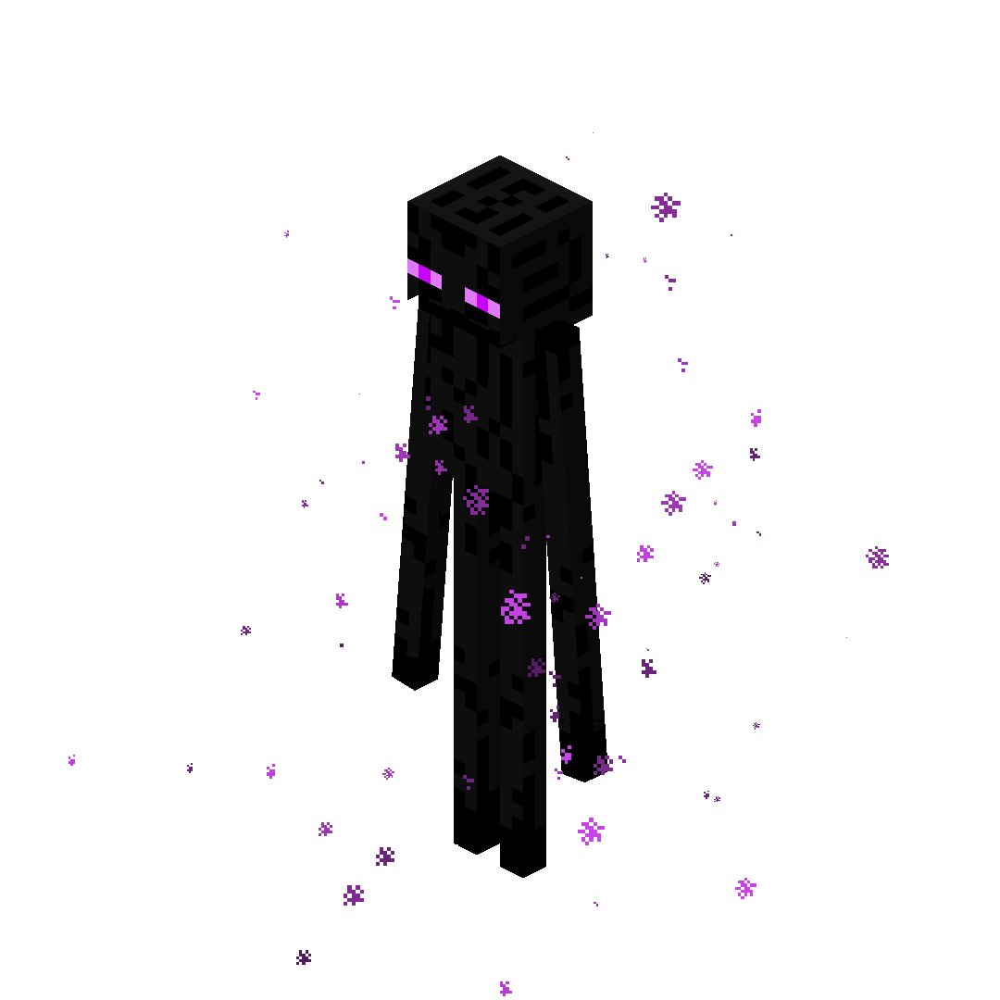

| Type | Enderman |
|---|---|
| HP | 55 |
| Attack | 10 |
| Defense | 3 |
| Speed | 3 |
| Range | 6 (lightning) |
| Size | 2×2 |
| Phase 2 | ≤ 50% HP |
| Dimension | The End |
The Void Herald
Boss of the Outer End Islands — an ancient Enderman who has fully fused with the void.
The Void Herald is an ancient Enderman who has absorbed the power of the surrounding void, ruling over the outermost reaches of The End. It commands lightning and manipulates the platform arena itself, systematically collapsing the ground beneath the player’s feet. The arena shrinks as the fight progresses, making positioning as dangerous as the Herald’s direct attacks.
Abilities
- Void Gale: Pushes all entities 2 tiles toward the nearest void edge. Telegraphed 1 turn.
- Lightning Strike: Marks the player’s position plus a cross pattern — deals 6 damage next turn.
- Platform Collapse: Permanently destroys a 2×2 section of floor as void. Telegraphed 1 turn.
- Blink Assault: Teleports adjacent to the player and attacks the player plus 2 adjacent targets.
Phase 2 — “Oblivion”
Triggers at ≤ 50% HP. The Void Herald’s Speed increases to 4. Void Gale push increases to 3 tiles. Lightning Strike now marks 2 locations simultaneously. Platform Collapse auto-triggers every 2 turns regardless of other actions. The Herald summons 2 Endermites near the player every 3 turns.
Strategy
The arena shrinks throughout this fight as platforms collapse. Stay near the center and track which tiles are still safe. Getting pushed by Void Gale toward the edge is lethal — always maintain the ability to reposition away from the void. Prioritize surviving Platform Collapse telegraphs over dealing damage, especially in Phase 2 when collapses become automatic. The Endermites in Phase 2 are a secondary threat but can occupy valuable safe tiles.